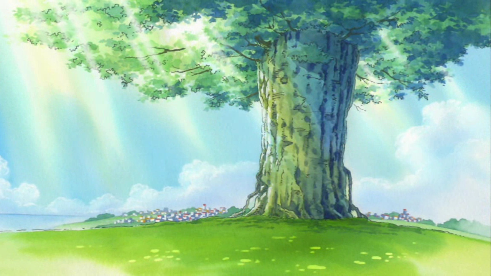

Essa é uma caça ao tesouro entre pai e filho. Se prepare para uma história fantástica!!
A Caça ao Tesouro do Pai e do Filho
Era uma manhã ensolarada no bairro tranquilo de Jardim das Flores, e Lucas estava ansioso para passar um dia especial com seu pai, Jorge. Depois de um café da manhã gostoso, Jorge entrou na sala com um sorriso enigmático e um velho mapa em mãos.
— Hoje, meu filho, vamos embarcar em uma caça ao tesouro! — anunciou Jorge, entregando o mapa a Lucas. As marcas em vermelho com um "X" atraíram a atenção do garoto.
— Uau! O que tem no mapa? — Lucas perguntou, seus olhos brilhando de excitação.
— Quatro lugares marcados — disse Jorge. — Você deve escolher um, e lá encontrará pistas que, juntas, revelarão onde o tesouro está escondido. Vamos começar a aventura!
O Parque da Amizade
Lucas escolheu primeiro o Parque da Amizade, onde costumava brincar com seus amigos. Ao chegar, ele se lembrou da árv ore gigante no centro. Enquanto explorava a área, notou algo brilhante na sombra da árvore. Ao se aproximar, encontrou um pequeno baú de madeira.
Dentro, havia uma pista escrita em papel envelhecido:
"Onde as risadas ecoam e a amizade floresce, olhe sob o lugar onde a sombra do passado permanece."
A Ponte do Arco-Íris
Animado com a descoberta, Lucas e seu pai seguiram para a Ponte do Arco-Íris, que ligava o parque a um campo aberto. Ao atravessar a ponte, Lucas observou as águas do rio correndo abaixo. Ao chegar ao final, viu um pequeno frasco preso entre as pedras.
Dentro do frasco, uma nova pista:
"Entre o céu e a água, onde o arco se forma, a beleza do dia traz a resposta à sua norma."
O Jardim Secreto
Com a segunda pista em mãos, Lucas decidiu ir ao Jardim Secreto, um lugar especial onde flores exóticas cresciam e onde ele sempre sonhara em explorar. Ao chegar, notou uma pequena estátua de um pássaro que parecia observar tudo ao redor. Ao investigar mais de perto, encontrou uma mensagem escondida atrás dela.
A terceira pista dizia:
"No canto dos sonhos, onde as flores sussurram, busque a história que a brisa murmura."
A Colina do Horizonte
Finalmente, Lucas e seu pai foram para a Colina do Horizonte, o último local marcado no mapa. Ao subirem, a vista se abriu, mostrando todo o bairro abaixo. No topo, havia uma pedra grande e lisa, que sempre foi um lugar de descanso para eles.
Enquanto exploravam, Lucas encontrou uma pequena caixa enterrada sob a pedra. Com o coração acelerado, ele abriu a caixa e encontrou a última pista:
"Onde o céu encontra a terra e os sonhos se encontram, a jornada termina, e o tesouro se revela em um instante."
O Quintal
Com a última pista, Lucas e Jorge se dirigiram para um lugar especial que sempre significou algo para eles: o quintal de casa, onde passavam tardes inteiras contando histórias e sonhando juntos. Ao chegarem, Lucas começou a cavar sob a velha árvore que plantaram juntos.
Com um esforço, ele puxou uma caixa enferrujada. Ao abrir, não encontrou ouro, mas sim um tesouro de memórias: fotos, bilhetes de aventuras passadas e pequenos objetos que representavam momentos especiais que compartilharam.
— Este é o verdadeiro tesouro, Lucas — disse Jorge, com um sorriso orgulhoso. — Nossas memórias juntos.
Lucas sorriu, percebendo que a verdadeira aventura foi o tempo que passaram juntos. Eles prometeram continuar criando novas memórias, sempre em busca de novas aventuras.